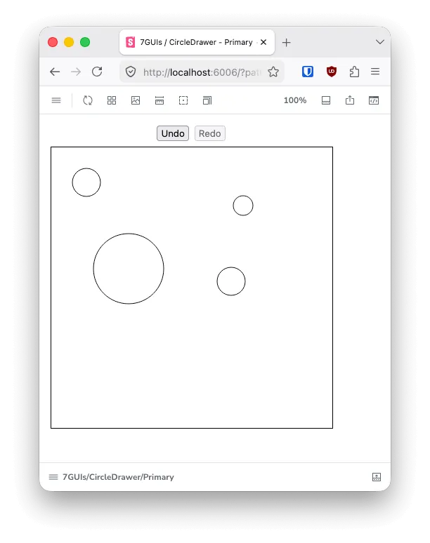
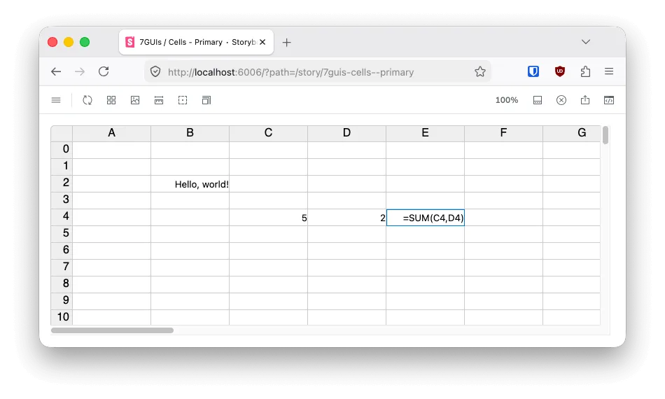
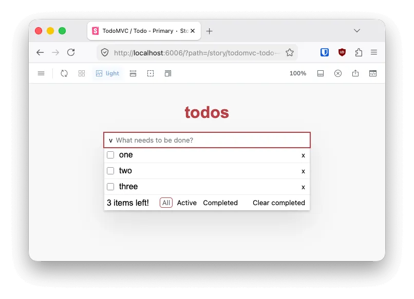

Learning Lit with 7GUIs and TodoMVC
Web components are pretty mature now. Unfortunately, even with web components, the web's default rendering pattern is retained mode. In a post-React world, anything that's not immediate mode is going to be a hard sell. You could write your own solutions to make web components render in an immediate mode, or you could use Lit. Lit is an off-the-shelf solution that provides similar features to React in terms of rendering and state management. However, unlike React, Lit builds upon the browser's web components API.
I also found Lit attractive due to how small it is. My understanding is that all of Lit is smaller than even Preact assuming you add state management to Preact.
The other cool thing about using web components is that hydrating your page from the back-end is just a matter of sending HTML over the wire.
To get some hands-on experience with Lit, I chose to recreate 7GUIs and TodoMVC. 7GUIs is a set of seven graphical applications meant to compare and contrast different GUI libraries on a level playing field. TodoMVC is a similar idea consisting of a single to-do application.
I used Storybook as the harness for the various GUIs and I took the opportunity to try out Github's new performance add-on for Storybook. I used the Lit, Typescript, and Vite boilerplate project.
The code I wrote is available for your perusal if you so wish at https://github.com/hexpunk/learning-lit/.
The first five GUIs from 7GUIs (Counter, Temperature Converter, Flight Booker, Timer, and CRUD) were all relatively trivial to implement in individual Lit components. However, this also meant they didn't really teach me much about Lit beyond the basics. Since they were all single components, composition didn't come into play.

The sixth GUI, Circle Drawer, taught me something important. I chose to use SVG to render the circles rather than using divs with rounded corners, for example. Because of that choice, I learned that there is an svg equivalent to Lit's html tagged template. It's important to use the correct tagged template to get SVG to render on the fly.
For the undo/redo stacks, I chose to record individual actions instead of snapshots of the overall state in order to reduce memory usage. However, that made the undo/redo logic a bit more complex. If I was going to write a larger application, I'd refactor this logic to be more encapsulated.

The seventh GUI, Cells, was much more complex than the other six GUIs. It's a basic spreadsheet application that supports text, numbers, references, ranges, and basic nested formulas. It felt like a very well-balanced challenge in that it contained a little bit of everything: parsing, evaluation, change propagation, and performance optimization. I was able to get a full sheet with 2600 cells performing without any dropped frames or excessive CPU or memory usage.
I used Vitest to write tests for my parser.
The Github performance plugin helped to guide my performance optimizations, although I was disappointed to find it only supports certain features, like element timing and long animation frames, on Chrome and not on Firefox.
I enjoyed the challenge of the Cells GUI. I'd recommend this exercise to any and all developers. It's like a bite-sized version of writing an interpreter. Unfortunately, very little of the Cells application actually focuses on the GUI itself. Most of the code consists of all the other pieces of the puzzle.

Finally, I made a perhaps slightly more spartan version of TodoMVC. I didn't seek to make an exact replica. An official one created by the Lit team already exists. I sought to match functionality one-to-one, but the styles just mimic the flavor of the original.
TodoMVC taught me the most about Lit. I used composition by creating a separate component for list items. I learned the difference between an attribute (?checked=${this.checked}) and a property (.checked=${this.checked}). It's a really important distinction that will lead to bugs if you don't understand it. In my case, I needed a property so that my application state and the DOM would properly stay synced.
I'm really glad I took this opportunity to learn to use Lit. I will definitely reach for it for future front-end projects. I also learned that while the Cells application from 7GUIs was really enjoyable and empowering, the 7GUIs tasks themselves aren't a great measure of anything when you're writing HTML. I think doing 7GUIs in any HTML framework is probably going to be a trivial endeavor, at least for the GUIs themselves. TodoMVC is a better project for kicking the tires on a new web GUI framework.